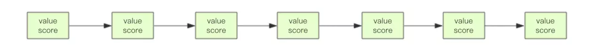
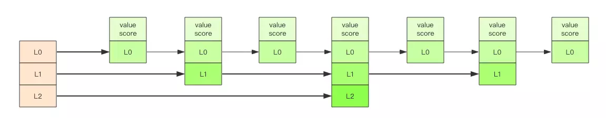

前言
关于redis，我使用最多的数据结构就是简单的String。对于其他数据结构list、set、hash、zset，乃至于更高级的HyperLogLog、布隆过滤器，基本没有使用过，这次在工作中，恰好遇到需要使用zset的业务场景，特此记录。
zset数据结构介绍
zset 可能是 Redis 提供的最为特色的数据结构，它也是在面试中面试官最爱问的数据结构。它类似于 Java 的 SortedSet 和 HashMap 的结合体，一方面它是一个 set，保证了内部 value 的唯一性，另一方面它可以给每个 value 赋予一个 score，代表这个 value 的排序权重。它的内部实现用的是一种叫做「跳跃列表」的数据结构。
zset 中最后一个 value 被移除后，数据结构自动删除，内存被回收。
zset 可以用来存粉丝列表，value 值是粉丝的用户 ID，score 是关注时间。我们可以对粉丝列表按关注时间进行排序。
zset 还可以用来存储学生的成绩，value 值是学生的 ID，score 是他的考试成绩。我们可以对成绩按分数进行排序就可以得到他的名次。
1 | > zadd books 9.0 "think in java" |
业务场景
本次使用到zset的业务是一个挂号底部消息通知的需求。当用户在微脉app上面挂号之后，就诊日期前两天时在底部出现消息提示，提示用户挂号信息，对用户进行引导。
这里只是简单的描述，实际需求比这个复杂很多。完成这个需求的第一步，便是获取用户的预约挂号记录。预约挂号秒的数据量很大，接近1000w，如果每次请求都去查库，势必对数据库造成很大压力。在查询完数据之后放入缓存，可以减缓数据库压力。但是app在推送咨询之后，流量会瞬间暴涨，如果这个时候没有缓存，流量瞬间到了数据库，很有可能造成数据库堵塞，甚至假死。
总之，需要避免app请求这个接口的时候直接去查库，只从redis中取数据，这就需要提前将数据放入缓存。当时考虑的方案有两个，一个是用调度在凌晨将最近3天的预约挂号记录查询出来，放入缓存。一个是当用户产生挂号业务(挂号，取消挂号等)时，发送消息异步更新缓存数据。
第一个方式简单粗暴，改动量小，不过还是要查询数据库，扫表。第二个方式改动量较大，但是不会对数据库造成压力。
综合考虑之后，我们选择了第二种。
redis数据结构的选择
不管使用哪一种方案，都需要将用户的挂号信息放入redis，那么使用哪一种数据结构呢？。直接使用简单的String结构，一个挂号信息对应一条redis的key-value，现在我们每天的挂号量有几万，3天大概就是十几万的key，在可以接受的范围内，不过随着业务的发展，key的数量可能会暴涨，不是很好，后面还要优化。
这个时候想到了redis的zset数据结构，一个用户对应一个key，使用就诊日期的时间戳作为score，取的使用使用score取出数据。完全满足这个需求。
附上接受到挂号消息业务之后的伪代码:
1 | //根据主键查询预约挂号信息 |
取数据的伪代码:
1 | //根据主键查询预约挂号信息 |
zset底层原理
以下内容节选至老钱的《Redis深度历险:核心原理与应用》 侵删
zset 内部的排序功能是通过「跳跃列表」数据结构来实现的，它的结构非常特殊，也比较复杂。
因为 zset 要支持随机的插入和删除，所以它不好使用数组来表示。我们先看一个普通的链表结构。

我们需要这个链表按照 score 值进行排序。这意味着当有新元素需要插入时，要定位到特定位置的插入点，这样才可以继续保证链表是有序的。通常我们会通过二分查找来找到插入点，但是二分查找的对象必须是数组，只有数组才可以支持快速位置定位，链表做不到，那该怎么办？
想想一个创业公司，刚开始只有几个人，团队成员之间人人平等，都是联合创始人。随着公司的成长，人数渐渐变多，团队沟通成本随之增加。这时候就会引入组长制，对团队进行划分。每个团队会有一个组长。开会的时候分团队进行，多个组长之间还会有自己的会议安排。公司规模进一步扩展，需要再增加一个层级 —— 部门，每个部门会从组长列表中推选出一个代表来作为部长。部长们之间还会有自己的高层会议安排。
跳跃列表就是类似于这种层级制，最下面一层所有的元素都会串起来。然后每隔几个元素挑选出一个代表来，再将这几个代表使用另外一级指针串起来。然后在这些代表里再挑出二级代表，再串起来。最终就形成了金字塔结构。
想想你老家在世界地图中的位置：亚洲–>中国->安徽省->安庆市->枞阳县->汤沟镇->田间村->xxxx号，也是这样一个类似的结构。

「跳跃列表」之所以「跳跃」，是因为内部的元素可能「身兼数职」，比如上图中间的这个元素，同时处于 L0、L1 和 L2 层，可以快速在不同层次之间进行「跳跃」。
定位插入点时，先在顶层进行定位，然后下潜到下一级定位，一直下潜到最底层找到合适的位置，将新元素插进去。你也许会问，那新插入的元素如何才有机会「身兼数职」呢？
跳跃列表采取一个随机策略来决定新元素可以兼职到第几层。
首先 L0 层肯定是 100% 了，L1 层只有 50% 的概率，L2 层只有 25% 的概率，L3 层只有 12.5% 的概率，一直随机到最顶层 L31 层。绝大多数元素都过不了几层，只有极少数元素可以深入到顶层。列表中的元素越多，能够深入的层次就越深，能进入到顶层的概率就会越大。
这还挺公平的，能不能进入中央不是靠拼爹，而是看运气。
关于跳跃列表的内部结构实现，请阅读第 36 节凌波微步 —— 探索「跳跃列表」内部结构